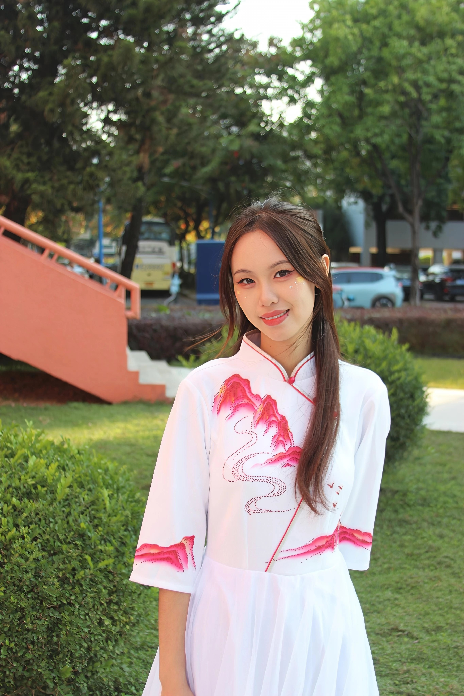

网页设计图 · 潘楚柔的作品集
Visual direction — Silk Mountain / 粉山白衿
Silk#FBF6F1
Paper#FFFCF8
Magenta#E13B78
Deep#B81E54
Piping#C42B3A
Garden#355744
Peach#E8B09A
Gold#C9A46C
Portfolio · 2026
潘楚柔的作品集
从白旗袍上的粉山取色：丝绸底、品红远山、园林绿与桃石阶。主视觉用月洞门框住肖像，作品分区按 AI 工具 / 视频 / 海报 / 推文展开。
视觉设计
内容策划
视频剪辑
AI 绘画
AI 视频
Vibe Coding
Codex
账号运营

moon gate · 园林取景
版式
首屏左右对开，左文右像。标题用宋体巨号字，英文衬线斜体作第二行。作品区用杂志分栏，Codex 两页用 STAR 长卡片，海报可灯箱放大。
字体
中文标题 Noto Serif SC；英文 Cormorant Garamond；正文 Noto Sans SC。不用 Inter / 系统默认无衬线作为主视觉。
动效
入场错落淡入，粉山轻轻上移。导航与技能标签滚动高亮。海报点击灯箱。克制、丝绸感，不做霓虹渐变。